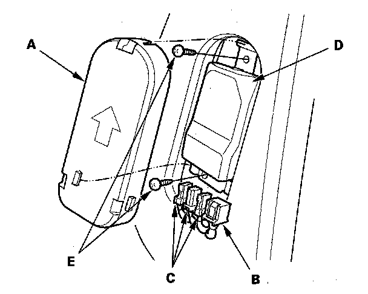
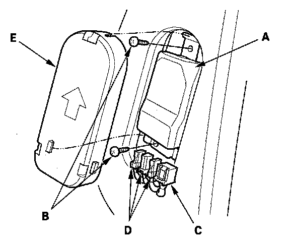

ODS Unit Replacement
ODS Unit ReplacementNOTE: Review the seat replacement procedure before doing repairs or service.
Removal
1. Disconnect the negative cable from the battery, and wait at least 3 minutes before beginning work.
2. Disconnect the passenger's side airbag harness 2P connector.
3. Remove the passenger's seat assembly and seat-back cover.

4. Remove the cover (A), then disconnect the ODS unit 18P connector (B) and sensor connectors (C) from the ODS unit (D).
5. Remove the two screws (E) and the ODS unit.
Installation

1. Place the new ODS unit (A) on the seat-back frame. Tighten the two screws (B), and connect the ODS unit harness 18P connector (C) and sensor connectors (D) to the ODS unit. Reinstall the cover (E).
2. Install the seat-back cover in the reverse order of removal.
3. Install the seat assembly, then connect the side airbag harness 2P connector.
4. Reconnect the negative cable to the battery.
5. Set the seat-back in the normal position, and make sure there is nothing on the front passenger's seat.
6. Initialize the ODS unit.
7. After installing the ODS unit, confirm proper system operation: Turn the ignition switch ON (II); the SRS indicator should come on for about 6 seconds and then go off.